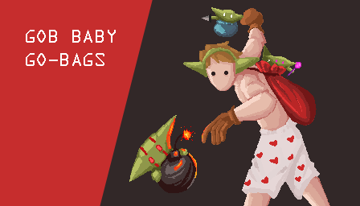
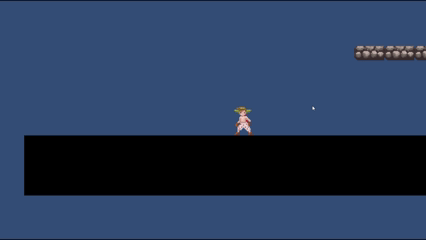
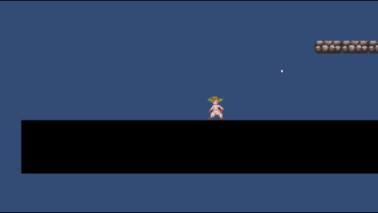
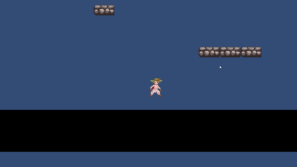
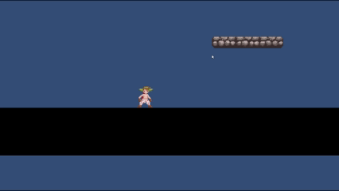
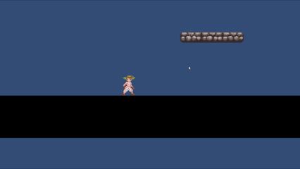

Gob Baby Go-Bags
Gob Baby Go-Bags is a 2D arcade platformer created in the Unity game engine. Players take control of a character that cannot deal damage themselves. They must instead collect Gob babies and throw them at the endless horde of enemies that pursue you to survive. This game was made over the course of three days for the 2026 Winnipeg Game Jam.
Project Overview
- Role: Gameplay Designer and Lead Programmer
- Engine: Unity
- Team Size: Four, one artist and one full-time programmer and two part-time programmers
- Genre: 2D Arcade Platformer
- Pitch: Survive against an endless horde of enemies armed with only a bag of Gob babies! Wait... WHAT?!
My Contributions
- Player controller
- Gob babies
- Gameplay Flow
- Actor spawning
- Teleporters
Design Breakdown
Player Movement / Control
Design Goals
Develop and design a player controller that leaves the player having fun and satisfied simply moving the player around in the world.
Inspiration
After playing Hollow Knight: Silksong I was inspired by the smooth movement Team Cherry was able to achieve. So after my Game Jam team decided we would make a 2D platformer I immedietly knew I wanted to try my hand at developing a player controller that simply felt good to control.
System Design
Players move left and right. Camera has look ahead feature to see more in front of player.

Player jump height is adjustable based on how long jump button is held.

Players have coyote time.

Implementation
The player controller is implemented using a combination of Unity's Rigidbody2D system with custom code for jumping / gravity and collision detection. All settings for controlling the movement system are implemented in a scriptable object for easier adjusting of settings.
Horizontal movement is controlled by adjusting the Rigidbody2D's velocity value. This value is lerped between 0 and the max movement speed (walking or running). The speed at which the velocity increases or decreases is based on acceleration and deceleration values set in the movement settings scriptable object.
The jumping / gravity system is controlled through custom code rather than the Rigidbody2D to enable the system to have more control of its jumps. By doing it this way mechanics such as jump buffering, coyote time, and a variable jump height are easier to implement. Settings for the different jumping mechanics are found in the movement settings scriptable object.
Ground and head collisions are implemented seperate from Unity's collision components. BoxCasts are used to determine if the player is grounded or colliding with a ceiling. This helps with implementing the custom jump mechanics by allowing the system to determine if they are grounded or not.
Movement Features
- Acceleration Based Horizontal Movement: Results in smoother movement that looks and feels better to control
- Jump Buffering: Improves jump input responsiveness
- Coyote Time: Allows a jump shortly after leaving a platform
- Variable Jump Height: Holding the jump button allows for a higher jump
- Apex Hang Time: Players stay at peak of jump for some time. Helps with game feel
Iteration of Player Movement
Initially, with the various movement settings just set to their defaults, the player felt akward to control. Jumping is too quick, movement speed does not match how quick they do other things, and overall does not feel good to control.

In the final version, after playing around with the various movement settings, the player moves around the level a lot smoother and feels better to control.

Post Mortem
What Went Well
Describe the systems, mechanics, or parts of development that worked particularly well in the project.
Challenges
Discuss difficulties encountered during development, such as balancing, technical limitations, or design problems discovered during testing.
What I Learned
Reflect on lessons gained from the project. This could include insights about game design, player behavior, iteration, or development workflow.
Future Improvements
Explain what you would improve or expand if development continued. This demonstrates forward-thinking design.